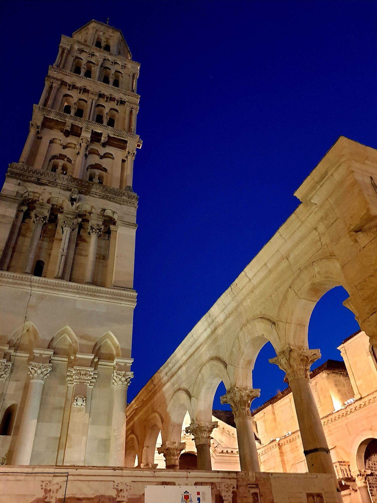
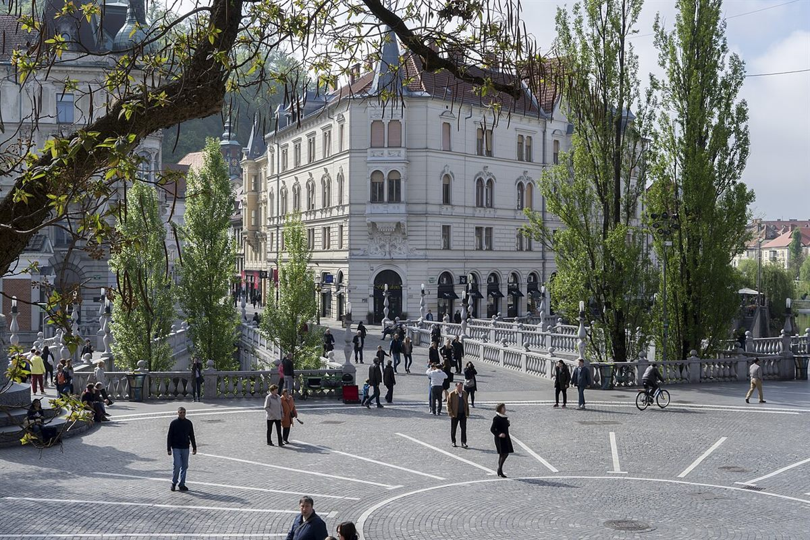

스플리트 흐바르
일반- 수단
- 배 · 쾌속선(Jadrolinija·Krilo·TP Line)
- 소요
- 약 1시간 5분
- 환승
- 직행
연중 운항, 여름에는 하루 여러 편.
아드리아해
Split – Hvar – Korčula – Dubrovnik
버스 대신 쾌속선으로. 아드리아해의 섬 두 곳을 징검다리 삼아 내려가는 여름 휴양 코스.

스플리트에서 쾌속선으로 흐바르, 코르출라를 차례로 건너 두브로브니크에 닿습니다. 구간마다 배로 1~2시간이라 이동 자체가 여행이 됩니다. 섬 사이 쾌속선은 계절 운항이라 4~10월에만 성립합니다.


선은 도시를 잇는 순서만 나타낸 직선이며 실제 철도·도로 경로가 아닙니다. 지도: © OpenStreetMap 기여자.
표준형 · 현지 8박 9일. 도시별 기본 동선이며 도착·출발 시각에 맞춰 조정하세요.
도착 인천 → 스플리트 공항. 도착일은 숙소 주변 위주로 가볍게.
디오클레티아누스 궁전(페리스틸·지하 궁전·성 도미니우스 종탑) → 리바 해안 산책로 → 마리안 언덕 일몰.
숙박: 스플리트
트로기르 구시가지(버스 약 30분) 또는 크르카 국립공원 당일 투어, 여름에는 흐바르·브라치 섬 당일치기.
카슈니 해변은 구시가지에서 걸어서 20~30분입니다.
숙박: 스플리트
이동 스플리트 → 흐바르 · 배 약 1시간 5분 일반
성 스테판 광장 → 스파뇰라 요새 일몰 → 프란체스코 수도원 → 항구 산책.
숙박: 흐바르
파클레니 군도 택시 보트(해수욕) → 스타리그라드 평야(유네스코)·옐사 마을 버스 여행.
7~8월은 숙박비가 가장 비쌉니다.
숙박: 흐바르
이동 흐바르 → 코르출라 · 배 약 1시간 20분 확인 필요
성 마르코 대성당 → 생선가시 모양 골목 → 성벽 탑 → 마르코 폴로 전시관.
숙박: 코르출라
룸바르다 마을 그르크 와인 시음·모래 해변(버스 15분) → 바디야섬 택시 보트.
숙박: 코르출라
이동 코르출라 → 두브로브니크 · 배 약 2시간 5분 확인 필요
필레 문 → 스트라둔 대로 → 성벽 한 바퀴(약 2km) → 스르지산 케이블카 일몰.
성벽은 개장 직후나 늦은 오후가 덜 덥고 덜 붐빕니다.
숙박: 두브로브니크
로브리예나츠 요새 → 로크룸섬(배 15분) 수영·산책 → 반예 해변 → 구항구 저녁.
숙박: 두브로브니크
오전에 못 본 곳을 둘러보고 공항으로 이동합니다. 귀국편은 대부분 다음 날 한국에 도착합니다.
연중 운항, 여름에는 하루 여러 편.
4~10월 중심의 계절 운항. 비수기에는 스플리트로 돌아가야 할 수 있습니다.
쾌속선은 계절 운항(대체로 4~10월). 버스는 연중 있지만 3시간 이상 걸립니다.
소요시간은 2026-11-15에 확인한 일반적인 범위입니다. 확인 2026-11 조사에서 소요시간·운행을 확인한 구간 · 일반 정기 노선으로 알려진 구간. 날짜별 시간표는 확인하지 않음 · 확인 필요 편수가 적거나 계절 운행이거나 자료마다 값이 다른 구간.
국경 크로아티아 한 나라 안에서만 움직입니다.
인천공항 출발 기준 · 들어가는 공항과 나오는 공항이 다른 다구간(오픈조) 항공권 추천
여름에는 유럽 주요 공항에서 연결편이 많고, 겨울에는 자그레브 경유가 일반적입니다.
이스탄불·프랑크푸르트·뮌헨·비엔나 등에서 1회 경유. 겨울에는 편수가 크게 줄어 2회 경유가 될 수 있습니다.
| 국제선 항공료 | 미확인 · 직접 검색 필요 | |
|---|---|---|
| 현지 숙박비 | 74만 원 | |
| 현지 식비 | 50만 원 | |
| 도시 간 이동비 | 10만 원 | |
| 관광·시내 교통 | 26만 원 | |
| 기타 경비 | 16만 원 | |
| 현지 합계(항공 제외) | 148만 원~209만 원 1인 · 8박 · 표준 · 하루 평균 22만 원 · 추정 기준 2026-11 · 신뢰 수준 낮음(어림값) | |
현지 물가 구간별 어림값(1인 기준)입니다. 성수기(7~8월 아드리아해, 12월 크리스마스 마켓 도시)에는 숙박비가 30~60% 오를 수 있고, 환율에 따라 달라집니다. 저예산 = 호스텔 도미토리와 간단한 식사, 표준 = 3성급 2인 1실의 1인 몫과 식당 1~2끼, 여유 = 4성급과 식당 위주.
5월 중순~6월, 9월
11~3월(섬 사이 쾌속선 없음, 대부분 휴업)
진할수록 좋은 달 · 7~8월은 물놀이에 가장 좋지만 숙박비가 최고이고 배표가 빨리 매진됩니다.

5박 · 1개국 · 현지 109만 원 안팎
작은 수도와 알프스 호수 두 곳. 이동 시간이 가장 짧은 힐링 코스.

8박 · 2개국 · 현지 187만 원 안팎
베네치아에서 출발해 합스부르크 항구와 슬로베니아 해안을 지나 알프스 호수에서 끝나는 코스.

7박 · 2개국 · 현지 180만 원 안팎
송로버섯 언덕 마을과 베네치아풍 어촌을 차로 잇는 크로아티아·슬로베니아 반도 일주.
8박 · 1개국 · 현지 176만 원 안팎
수도에서 호수 국립공원을 지나 달마티아 해안을 따라 내려가는 크로아티아의 정석.
정보 확인일 2026-11-15 · 루트·교통·항공 정보는 바뀔 수 있습니다. 잘못된 내용을 발견하면 학회로 알려 주세요.